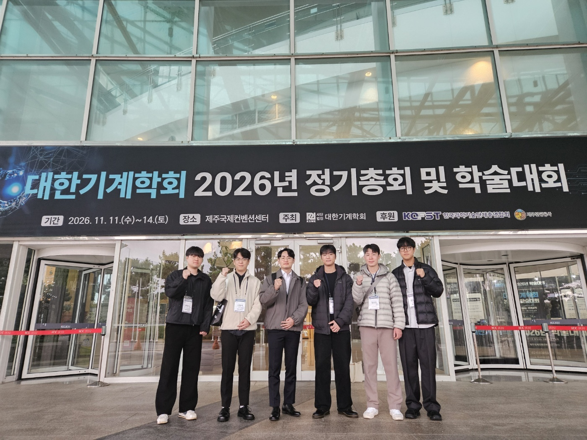

IDEA LAB 전원, 대한기계학회 2026년 학술대회 참가

1 / 8
IDEA LAB 구성원 전원이 11월 11일(수)부터 14일(토)까지 제주국제컨벤션센터(ICC 제주)에서 열린 대한기계학회 2026년 정기총회 및 학술대회에 참가했습니다. 학생들은 AI 기반 공학 설계와 해석에 관한 연구를 구두·포스터로 발표하며 학회 참가자들과 연구 내용을 나눴습니다.
- 주최
- 대한기계학회
- 일시
- 2026년 11월 11일(수) – 14일(토)
- 장소
- 제주국제컨벤션센터(ICC 제주)
- 구두발표
- 정승한, 하형진, 양선웅
- 포스터발표
- 안동균, 최준석
지난 7월부터 AI 스터디와 연구를 병행해 온 학생들이 그동안의 결과를 학회 현장에서 직접 소개했습니다. 발표 준비부터 질의응답까지 경험하며, 자신의 연구를 명확하게 설명하고 앞으로의 연구 방향을 구체화하는 기회가 되었습니다.